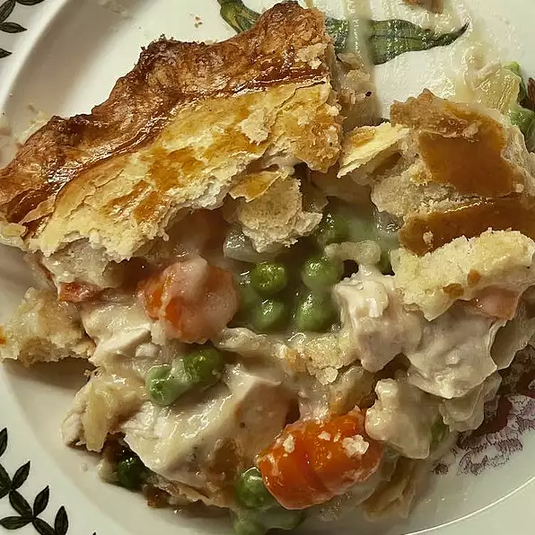

Chicken Potpie

Description
A delicious chicken pie made from scratch with carrots, peas and celery.
Ingredients
- 1 Pound Skinless Boneless Chicken Breast
- 1 Cup Sliced Carrots
- 1 Cup Frozen Peas
- 1/2 Cup Sliced Celery
- 1/3 Cup Butter
- 1/3 Cup Chopped Onion
- 1/3 Cup AP Flour
- 1/2 Tsp Salt
- 1/4 Tsp Black Pepper
- 1/4 Tsp Celery Seed
- 1 3/4 Cup Chicken Broth
- 2/3 Cup Milk
- 2 (9 Inch) Unbaked Pie Crusts
Directions
- Preheat oven to 425 degrees F (220 degrees C.)
- In a saucepan, combine chicken, carrots, peas, and celery. Add water to cover and boil for 15 minutes. Remove from heat, drain and set aside.
- In the saucepan over medium heat, cook onions in butter until soft and translucent. Stir in flour, salt, pepper, and celery seed. Slowly stir in chicken broth and milk. Simmer over medium-low heat until thick. Remove from heat and set aside.
- Place the chicken mixture in bottom pie crust. Pour hot liquid mixture over. Cover with top crust, seal edges, and cut away excess dough. Make several small slits in the top to allow steam to escape.
- Bake in the preheated oven for 30 to 35 minutes, or until pastry is golden brown and filling is bubbly. Cool for 10 minutes before serving.